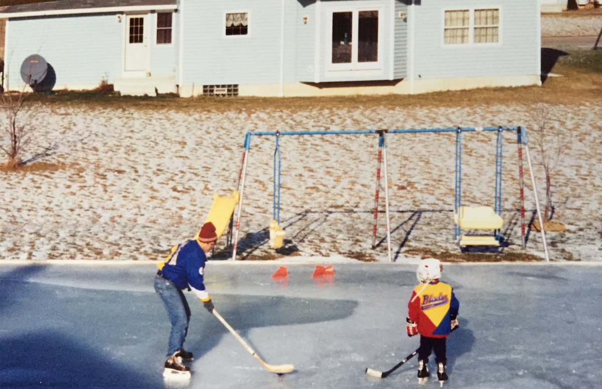

Russ Rizzo was born and raised around Buffalo, New York.
He spent ages 3-22 being creative in both thinking and hockey.
Russ has gone unselected in the NHL Draft for nine consecutive years.
He's currently pursuing other creative ventures.
You can view his resume here or contact him below.
russellmrizzo@gmail.com
716.550.2247